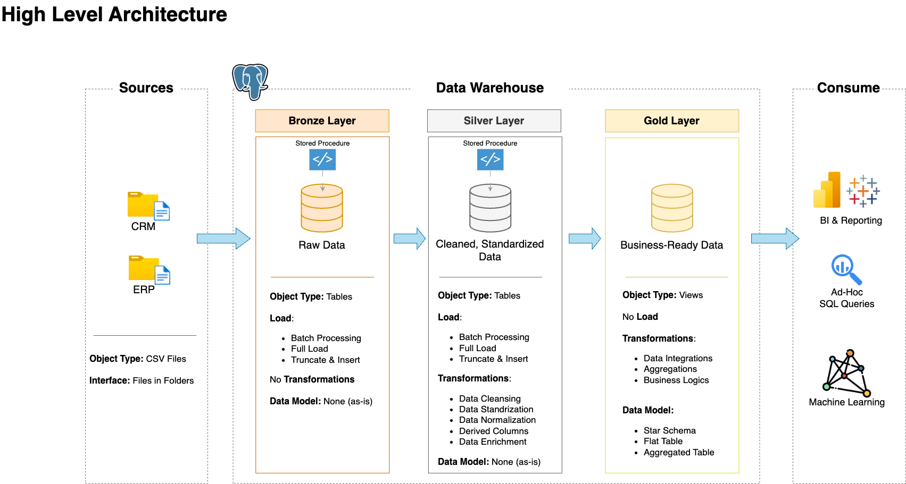
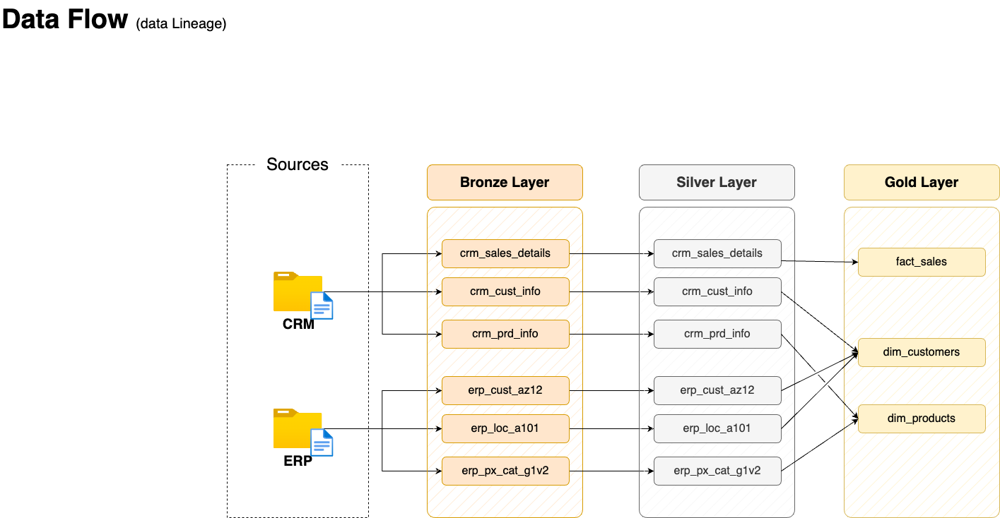
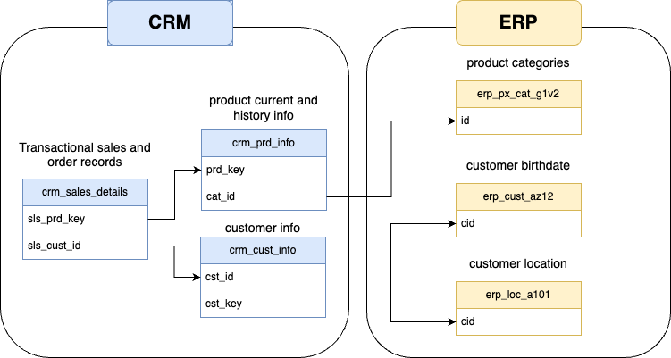
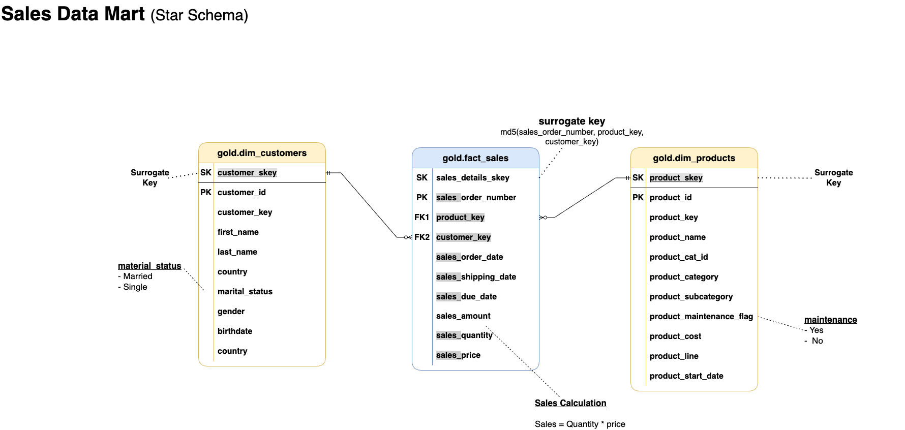

Introduction
Building a data warehouse can be daunting task. In this blog post, I make an attempt to take a sales dataset, do some transformation and load it into a data warehouse from which business intelligence team can create reports.
Full disclosure: This blog is inspired upon following Data With Bara video. Only the dataset, project specifications to make a data warehouse is unchanged; every other step is changed such as using docker, postgresQL and adding personal touches.
The code for this project is here in github.
ETL data architecture
This is the architecture we are going to implement. The raw data in csv files are extracted into bronze layer tables. Then the data is cleaned and transformed into silver layer tables. Then we combine tables to form data marts for business users in the gold/final layer.
 Source: Data With Baraa
Prerequisites and Setup
We use Ubuntu 20.04 LTS AWS EC2 and GCP machine for the project.
We need the following:
To make things easier I have scripted these prerequisites. Just clone my repo and run the instructions I provide.
clone and install prerequisites
sudo apt update && sudo apt install git make -y
git clone https://github.com/deepakramani/sql-data-warehouse-project.git
cd sql-data-warehouse-project
make install_docker
source ~/.bashrcLogout and log in back to the instance. To test docker if it is working, run
check if docker is installed
docker run --rm hello-world # should return "Hello from Docker!" without errorsSet environment variables:
Setting env variables
export POSTGRES_USER=postgres
export POSTGRES_PASSWORD=postgres
export POSTGRES_HOST=postgres
export POSTGRES_DB=sql_dwh_dbNow we’re ready to start our project.
Start ETL DWH project
cd ~/sql-data-warehouse-project
make up # creates the database and schemas for the medallion architectureExtract-Transform-Load (ETL) Process
We begin the ETL process of the data pipeline with the bronze layer. This layer is usually called staging layer as the raw data from various sources are dumped into temp tables. We choose full-extract type instead of incremental here. Raw data are in csv files.
Bronze Layer
Setup bronze layer and populate raw data to tables
setup bronze layer of ETL process
cd ~/sql-data-warehouse-project
make setup_bronze_tables
make populate_bronze_tablesNow the bronze layer tables have raw data populated.
Silver Layer
Setup silver layer table
(The script is designed to work only once in the beginning since gold layer table(downstream) is dependent on silver tables)
setup silver layer tables
cd ~/sql-data-warehouse-project
make setup_silver_tablesIn the Silver layer, data cleansing and transformation on the bronze layer tables are carried out.
Data Cleansing
This step includes:
- Remove duplicate entries
- Data filtering
- Handling missing/invalid data
- Handling unwanted white spaces
- Data type casting
- Outlier detection
Data Transformation
This step includes:
- Data enrichment
- Data integration
- Deriving new columns
- Data aggregations
- Applying business rules and logic
- Data normalization and standardization
Populate Silver layer tables
Populate silver layer tables
cd ~/sql-data-warehouse-project
make populate_silver_tablesAs the data integration image indicates, we design the silver layer tables accordingly.
Gold Layer (Business Logic layer)
We use the below image to see how data from the source comes downstream to the destination in gold layer views.

Source: Data with Baraa
Before the dimensional and fact tables are created, it is important to know the relationship between tables. The below data integration image shows how one table is related to other. This diagram helps in making joins with other tables using that specific key.

Create gold layer views
cd ~/sql-data-warehouse-project
make setup_gold_layerData Mart
In the image below, we can see how the gold layer dimensional and fact tables/views(data marts) are created.

Testing - Data quality checks
Testing data quality is an integral part of ETL process. It ensures bad data doesn’t get transmitted to the stakeholders or business users potentially avoiding dire consequences.
Here we check data integrity, consistency, and correctness. It verifies primary key uniqueness, standardization, referential integrity, and logical correctness of business rules.
Silver - data quality check
Silver data quality checks
cd ~/sql-data-warehouse-project
make check_silver_data_qualityGold - data quality check
Gold data quality checks
cd ~/sql-data-warehouse-project
make check_gold_data_qualityData Catalog
Gold layer views are usually used by Business users. In order to help them understand what each row in the table/view represent is important. Therefore I provide a catalog file that gives the metadata of the views created.
Future developments
- Take historical data into account
- Do incremental data load than full load each time
- Make use of an orchestration tool such as Dagster to orchestrate ETL process
- Do EDA on the gold layer and derive reports for business users
Deleting resources
To bring down all container and return to the original state, run the following instructions
restoring to original state
make downConclusion
In this blog we learn how to build a data warehouse using ETL process in a data pipeline. We learn to create sql scripts to create tables. We learn to create stored procedures and their invocation. We learn to do data quality check at the silver and gold layers.